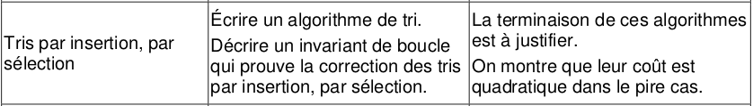

8 : Algorithmique

1. Animation Tri Sélection
Considérons la liste [5, 4, 2, 1]
Voici le fonctionnement de l'algorithme :

2. Principe Tri Sélection
description de l'algorithme
Attention un tableau de 4 valeurs (4 cases) sera numéroté de 0 à 3 et non de 1 à 4
Sur un tableau de n éléments (numérotés de 0 à n-1), le principe du tri par sélection est le suivant :
- rechercher le plus petit élément du tableau, et l'échanger avec l'élément d'indice 0 ;
- rechercher le second plus petit élément du tableau, et l'échanger avec l'élément d'indice 1 ;
- continuer de cette façon jusqu'à ce que le tableau soit entièrement trié.
En pseudo-code, l'algorithme s'écrit ainsi :
fonction tri_selection(tableau t):
n ← longueur(t)
pour i de 0 à n - 2
indice_min ← i
pour j de i + 1 à n
si t[j] < t[indice_min], alors indice_min ← j
fin pour
si indice_min ≠ i, alors échanger t[i] et t[indice_min]
fin pour
fin fonction
3. Implémentation de l'algorithme Tri Sélection
Tri par sélection
def tri_selection(tab) :
n=len(tab)
for i in range(n-2):
indice_min = i
for j in range(i+1, n) :
if tab[j] < tab[indice_min]:
indice_min = j
# Inversion
if indice_min!=i:
tmp = tab[i]
tab[i] = tab[indice_min]
tab[indice_min] = tmp
Vérification :
>>> ma_liste = [7, 5, 2, 8, 1, 4]
>>> tri_selection(ma_liste)
>>> ma_liste
[1, 2, 4, 5, 7, 8]
Pour vérifier avec PythonTutor, cliquer ici
4. Complexité de l'algorithme
4.1 Mesure du temps d'exécution
Nous allons fabriquer deux listes de taille 100 et 200 :
lst_a = [k for k in range(100,0,-1)] #on se place dans le pire des cas : une liste triée dans l'ordre décroissant
lst_b = [k for k in range(200,0,-1)] #on se place dans le pire des cas : une liste triée dans l'ordre décroissant
On peut aussi utiliser la fonction random pour créer des listes de manières aléatoire
Ici on crée une liste de 10 chiffres compris entre 0 et 999
import random
tab = [random.randint(0,1000) for i in range(10)]
print(tab)
La mesure du temps moyen de tri pour ces deux listes donne le résultat ci-dessous (avec le module timeit sous Jupyter Notebook)
%timeit tri_selection(lst_a)
632 µs ± 14.3 µs per loop (mean ± std. dev. of 7 runs, 1000 loops each)
%timeit tri_selection(lst_b)
2.35 ms ± 35.9 µs per loop (mean ± std. dev. of 7 runs, 100 loops each)
Voici l'algorithme à saisir sur un notebook Jupyter
def tri_selection(tab) :
n=len(tab)
for i in range(n-2):
indice_min = i
for j in range(i+1, n) :
if tab[j] < tab[indice_min]:
indice_min = j
# Inversion
if indice_min!=i:
tmp = tab[i]
tab[i] = tab[indice_min]
tab[indice_min] = tmp
lst_a = [k for k in range(100,0,-1)] #on se place dans le pire des cas : une liste triée dans l'ordre décroissant
lst_b = [k for k in range(200,0,-1)] #on se place dans le pire des cas : une liste triée dans l'ordre décroissant
print('Voici le temps de tri pour la liste lst_a')
%timeit tri_selection(lst_a)
print('Voici le temps de tri pour la liste lst_b')
%timeit tri_selection(lst_b)
En comparant les temps de tri des listes lst_a et lst_b, que pouvez-vous supposer sur la complexité du tri par sélection ?
Réponse
Une liste à trier 2 fois plus longue prend 4 fois plus de temps : l'algorithme semble de complexité quadratique.
- Pire cas : \(O(n^2)\)
- Moyenne : \(O(n^2)\)
- Meilleur cas : \(O(n^2)\)
4.2. Calcul du nombre d'opérations
Dénombrons le nombre d'opérations, pour une liste de taille \(n\).
- boucle
for: elle s'exécute \(n-1\) fois. - deuxième boucle
forimbriquée : elle exécute d'abord 1 opération, puis 2, puis 3... jusqu'à \(n-1\).
Or \(1+2+3+\dots+n-1=\dfrac{n \times (n-1)}{2}\)
Ceci est bien un polynôme du second degré, ce qui confirme que la complexité de ce tri est quadratique.
Vérification expérimentale
Insérer un compteur c dans votre algorithme pour vérifier le calcul précédent. On pourra renvoyer cette valeur en fin d'algorithme par un return c.
Voici l'algorithme à saisir sur un notebook Jupyter
def tri_selection1(tab) :
n=len(tab)
c=0
for i in range(n-2):
indice_min = i
for j in range(i+1, n) :
c+=1
if tab[j] < tab[indice_min]:
indice_min = j
# Inversion
if indice_min!=i:
tmp = tab[i]
tab[i] = tab[indice_min]
tab[indice_min] = tmp
return c
lst_a = [k for k in range(100,0,-1)] #on se place dans le pire des cas : une liste triée dans l'ordre décroissant
tri_selection1(lst_a)
lst_b = [k for k in range(200,0,-1)] #on se place dans le pire des cas : une liste triée dans l'ordre décroissant
tri_selection1(lst_b)
5. Preuve de la correction de l'algorithme
Est-on sûr que notre algorithme va bien trier notre liste ?
Les preuves de correction sont des preuves théoriques.
La preuve ici s'appuie sur le concept mathématique de récurrence.
Principe du raisonnement par récurrence : une propriété \(P(n)\) est vraie si :
- \(P(0)\) (par exemple) est vraie
- Pour tout entier naturel \(n\), si \(P(n)\) est vraie alors \(P(n+1)\) est vraie.
Ici, la propriété serait : « Quand \(i\) varie entre 0 et longueur(liste) -2, la sous-liste de longueur \(i\) est triée dans l'ordre croissant.» On appelle cette
propriété un invariant de boucle (sous-entendu : elle est vraie pour chaque boucle)
- quand \(i\) vaut 0, on place le minimum de la liste en l[0], la sous-liste l[0] est donc triée.
- si la sous-liste de \(i\) éléments est triée, l'algorithme rajoute en dernière position de la liste le minimum de la sous-liste restante, dont tous les éléments sont supérieurs au maximum de la sous-liste de \(i\) éléments. La sous-liste de \(i+1\) éléments est donc aussi triée.
6. Preuve de la terminaison de l'algorithme
Est-on sûr que notre algorithme va s'arrêter ?
À l'observation du programme, constitué de deux boucles for imbriquées, il n'y a pas d'ambiguïté : on ne peut pas rentrer dans une boucle infinie. Le programme s'arrête forcément au bout de d'un nombre fixe d'opérations.
D'après nos calculs sur la complexité, ce nombre de tours de boucles est égal à \(\dfrac{n \times (n-1)}{2}\).
Ceci prouve que l'algorithme se terminera.
7. Bonus : comparaison des algorithmes de tri
Une démonstration du tri par sélection cliquer --> ici
Une jolie animation permettant de comparer les tris :

Issue de ce site
1. Animation Tri Insertion
Considérons la liste [7, 5, 2, 8, 1, 4]
Voici le fonctionnement de l'algorithme :

2. Principe Tri Insertion
description de l'algorithme
- On traite successivement toutes les valeurs à trier, en commençant par celle en deuxième position.
- Traitement : tant que la valeur à traiter est inférieure à celle située à sa gauche, on échange ces deux valeurs.
3. Implémentation de l'algorithme Tri Insertion
Tri par insertion (version simple) 
def tri_insertion1(tab):
'''trie en place la liste tab donnée en paramètre'''
for i in range(1, len(tab)): #(1)
k = i #(2)
while k > 0 and tab[k-1] > tab[k] : #(3)
tab[k], tab[k-1] = tab[k-1], tab[k] #(4)
k = k - 1 #(5)
- On commence à 1 et non pas à 0.
- On «duplique» la variable
ien une variablek.
On se positionne sur l'élément d'indicek. On va faire «reculer» cet élément tant que c'est possible. On ne touche pas ài. - Tant qu'on n'est pas revenu au début de la liste et qu'il y a une valeur plus grande à gauche.
- On échange de place avec l'élément précédent.
- Notre élément est maintenant à l'indice
k - 1.
La boucle peut continuer.
Pour vérifier sur PythonTutor, cliquer ici
Vérification :
>>> maliste = [7, 5, 2, 8, 1, 4]
>>> tri_insertion1(maliste)
>>> maliste
[1, 2, 4, 5, 7, 8]